Harmoni Hanjawong Village
merupakan
proyek ke-14 PT Harmoni Grup Indonesia
yang berlokasi di Desa Sukamakmur, Kabupaten Bogor, Jawa Barat.
Mengusung konsep
PROPERTY, NATURE, LEISURE & LIFESTYLE
kawasan ini menawarkan kavling tanah
SHM
dengan pemanfaatan yang fleksibel sesuai kebutuhan, karakter
kavling, peruntukan ruang, dan ketentuan yang berlaku, serta
panorama alam Sukamakmur dan
View Gunung Hanjawong.
Unit Sold
000
Unit Available
000
Unit Sold
00000m²
Unit Available
00000m²
Keunggulan
Harmoni Hanjawong Village
Memiliki keunggulan sebagai berikut:
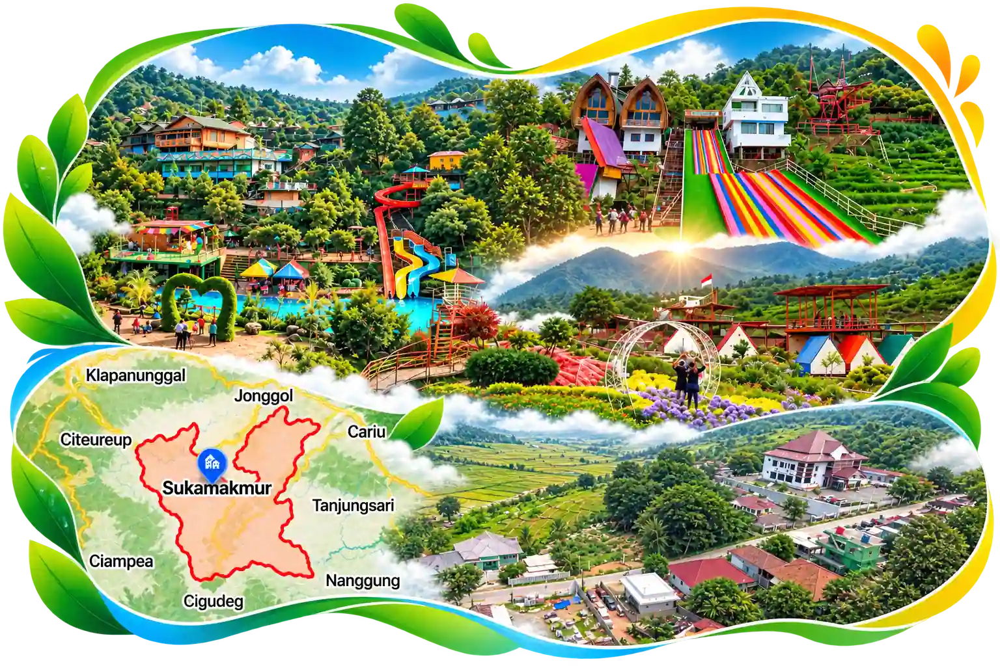
Strategic Access
Berada di kawasan
Jalur Wisata Puncak 2 Sukamakmur, dengan
lingkungan yang terhubung ke berbagai fasilitas masyarakat dan
destinasi wisata.
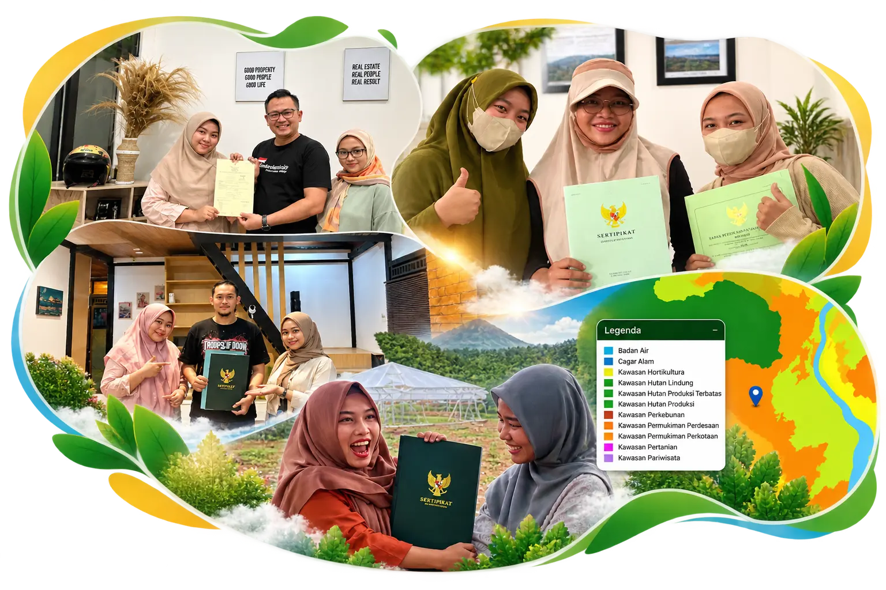
SHM Ownership
Kepemilikan berupa Sertifikat Hak Milik (SHM) dengan peruntukan
Zona Kuning / PP2, memberikan dasar kepemilikan
tanah yang jelas.
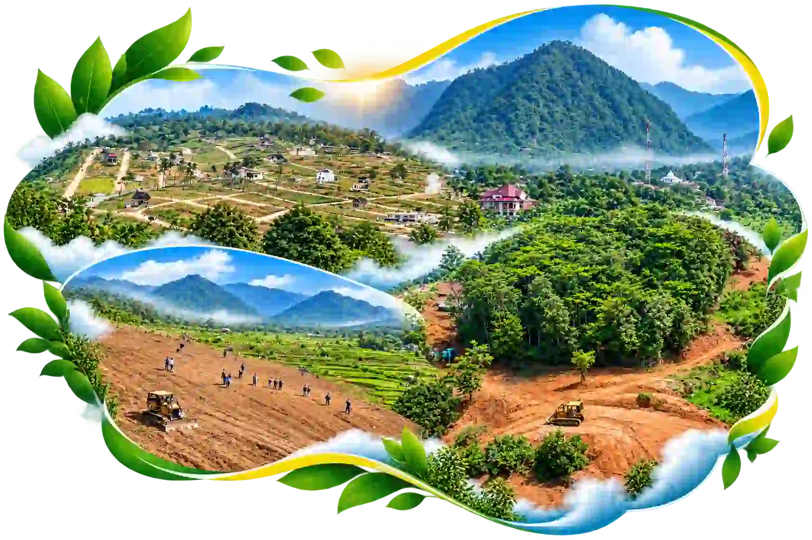
Nature & View
Menghadirkan karakter alam Hanjawong berupa
View Gunung Hanjawong, perbukitan, persawahan,
lingkungan hijau, dan udara yang relatif sejuk.
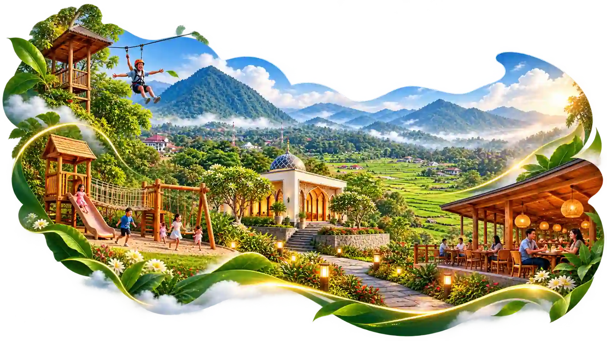
Lifestyle Ecosystem
Bukan sekadar kavling, tetapi dikembangkan dengan konsep kawasan
dengan rencana area seperti
Resto, Playground, Flying Fox, Taman, Mushala, serta Ruang
Terbuka
Konsep pengembangan kawasan mencakup rencana fasilitas Utilitis & Area
Komersil seperti:
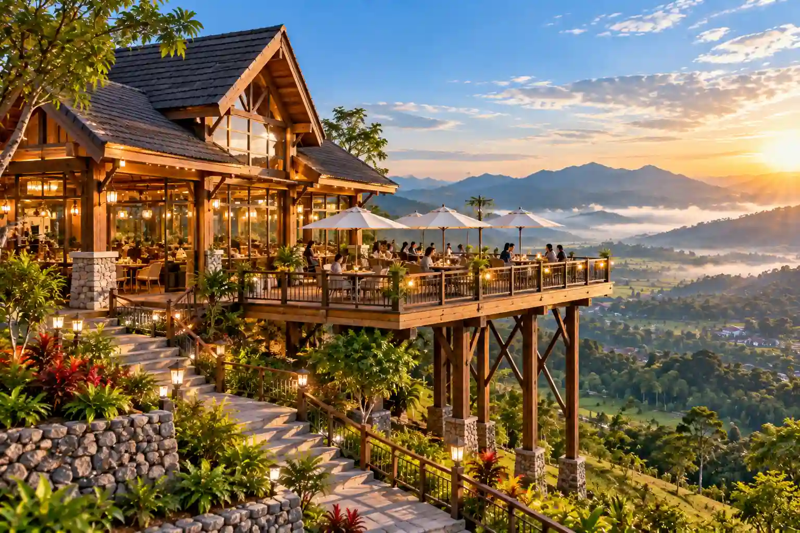
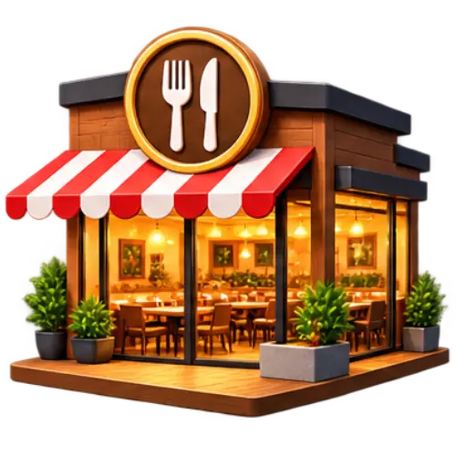
Resto Kawasan
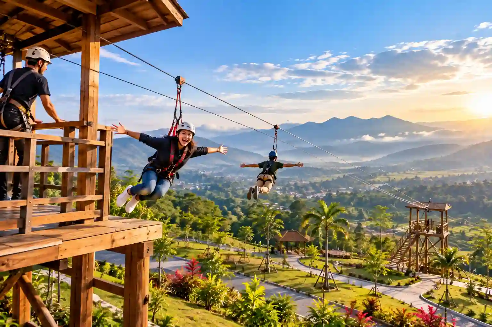
Flying Fox
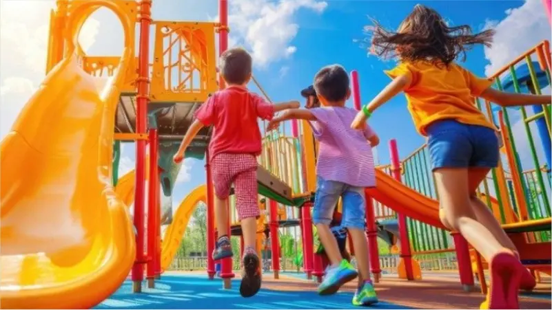
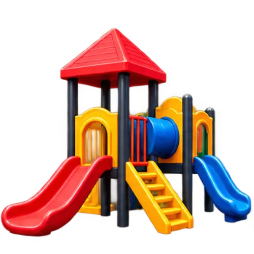
Playground Anak
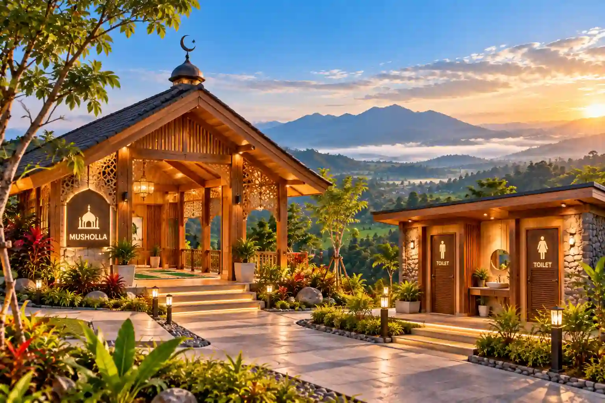
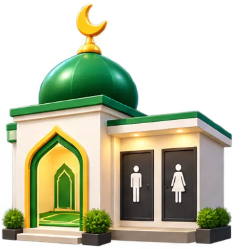
Mushola & Toilet
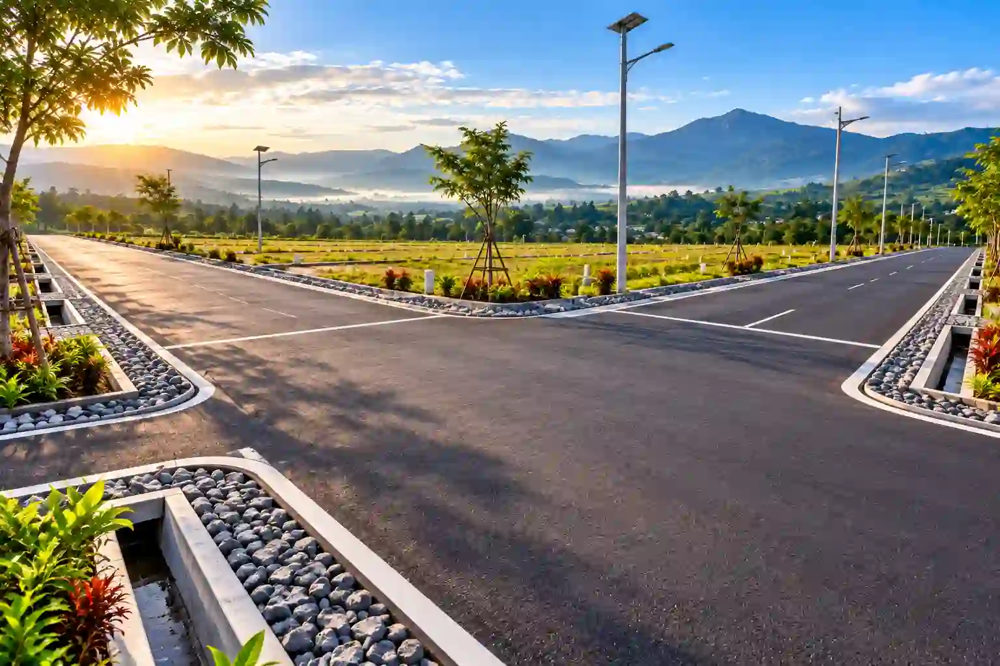
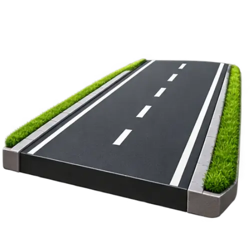
Jalan Aspal
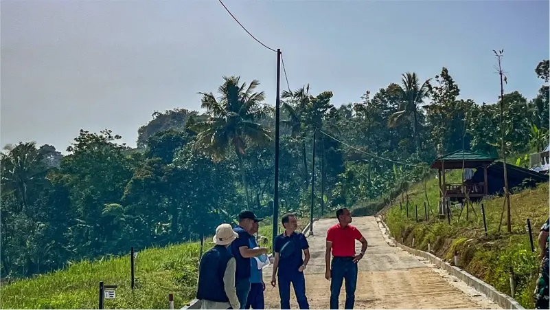
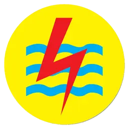
Tiang Listrik
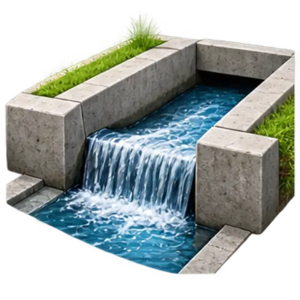
Drainase U-Dit
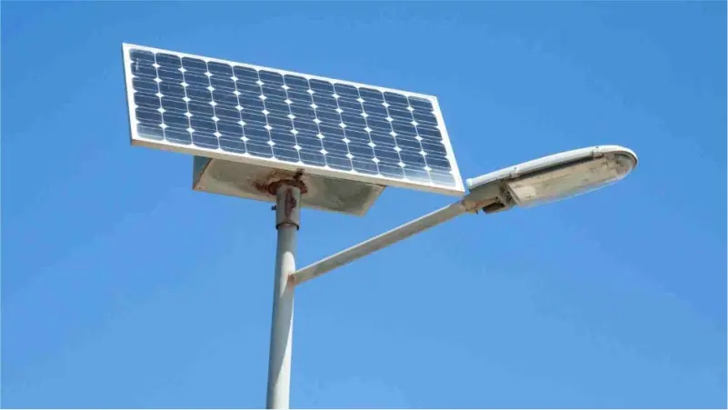
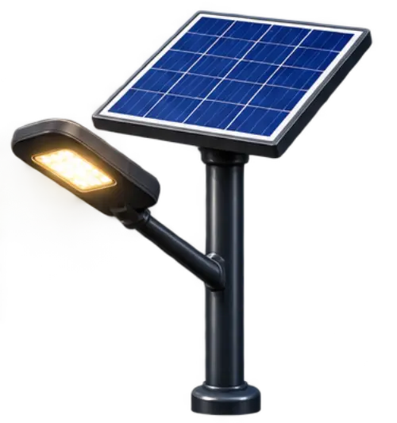
Solar Cell
Destinasi Wisata Terdekat
Harmoni Hanjawong Village
Berada di jantung wisata puncak 2 sebagai berikut:
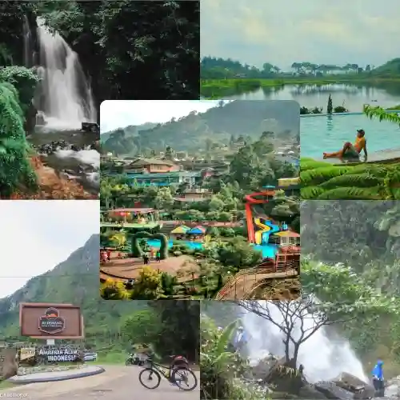
Curug Cipamingkis, Curug Ciherang, Villa Khayangan, Situ/Rawa Gede,
dan Gunung Batu Jonggol.
REVIEW
Pilihan Kavling
Temukan Tipe Kavling
Hanjawong Village
Pilihan kavling dengan karakter dan keunggulan berbeda.
Temukan tipe yang sesuai dengan rencana Anda untuk memiliki
aset tanah di kawasan Puncak 2, Sukamakmur, Bogor.
Sunrise Living
Hanjawong Aruna
Pilihan kavling dengan konsep Sunrise Living untuk Anda
yang menginginkan suasana pagi yang menyegarkan dan
lingkungan yang nyaman.
Konsultasikan kebutuhan dan rencana Anda bersama tim
Harmoni Hanjawong Village untuk mendapatkan informasi
tipe kavling, ketersediaan unit, dan harga terbaru.
Harga yang ditampilkan merupakan harga acuan dan dapat berubah
sewaktu-waktu. Konfirmasi harga, luas, posisi, serta ketersediaan
unit kepada tim pemasaran Harmoni Hanjawong Village.
Gallery
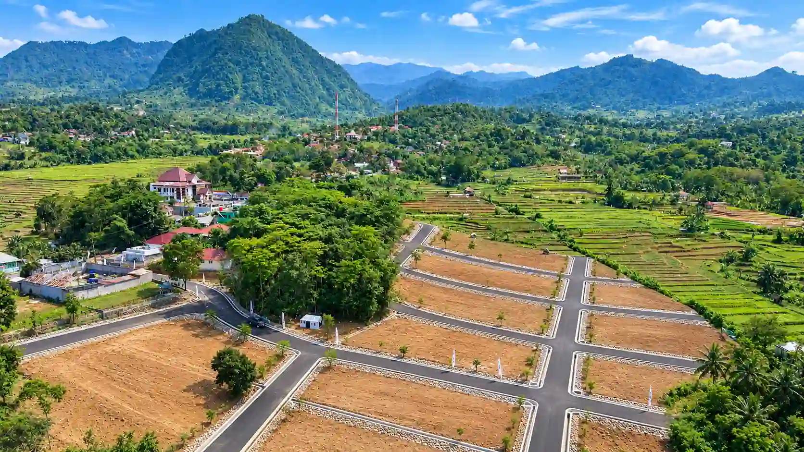
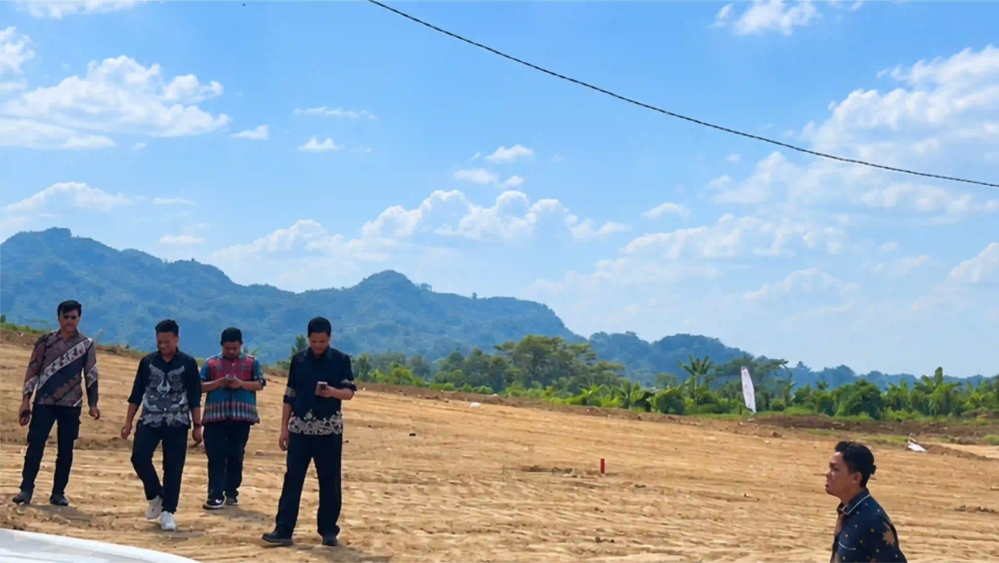
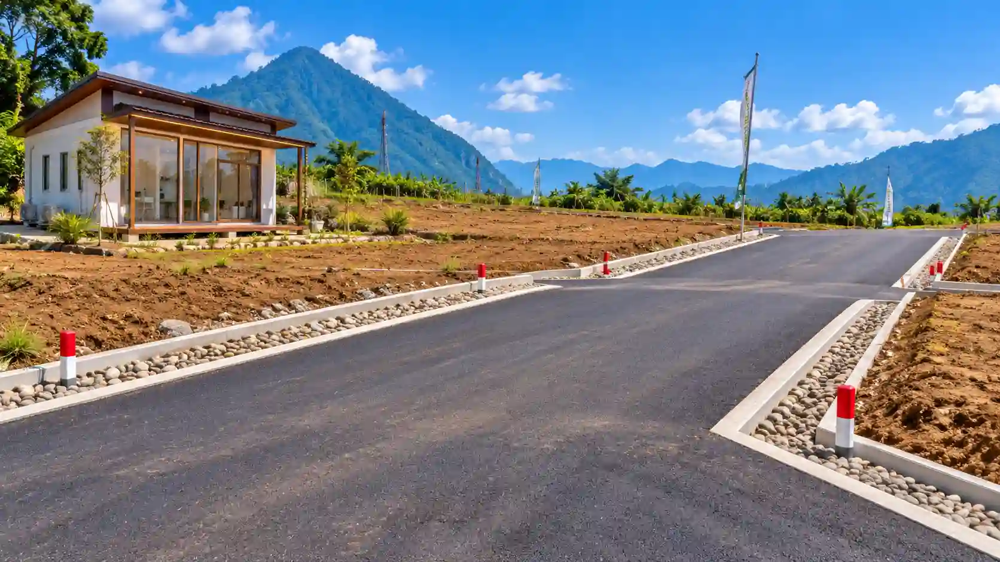
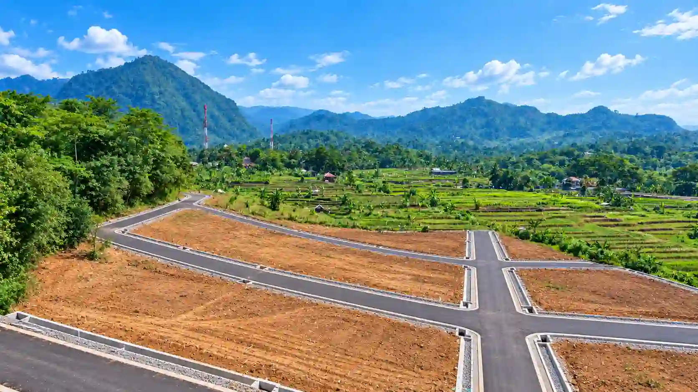
Apa itu Harmoni Hanjawong Village?
Harmoni Hanjawong Village
merupakan
Project ke-14 PT Harmoni Grup Indonesia
yang dikembangkan di Desa Sukamakmur, Kecamatan Sukamakmur,
Kabupaten Bogor, Jawa Barat.
Harmoni Hanjawong Village hadir dengan konsep kawasan yang
mengangkat perpaduan:
PROPERTY + NATURE + LEISURE + LIFESTYLE
dengan berbagai opsi pemanfaatan lahan yang dapat disesuaikan dengan
kebutuhan pemilik, karakter kavling, peruntukan ruang, serta
ketentuan yang berlaku. Fondasi produknya adalah kepemilikan kavling
tanah
SHM,
dengan karakter kawasan yang menawarkan panorama alam Sukamakmur dan
View Gunung Hanjawong.
Berapa luas Harmoni Hanjawong Village?
Rencana pengembangan kawasan sekitar
±5 hektare, dengan kavling mulai sekitar ±100 m². Pemanfaatan kavling tetap
mengikuti karakter produk, posisi, peruntukan, serta ketentuan yang
berlaku.
Di mana lokasi Harmoni Hanjawong Village?
Harmoni Hanjawong Village berada di:
Desa Sukamakmur, Kecamatan Sukamakmur, Kabupaten Bogor, Jawa
Barat.
Lokasinya berada di kawasan jalur wisata Puncak 2 Bogor.
Apa yang menarik dari kawasan Sukamakmur?
Sukamakmur memiliki karakter yang memadukan:
• lingkungan alam,
• perbukitan dan pegunungan,
• persawahan,
• destinasi wisata alam,
• kawasan villa,
• serta aktivitas masyarakat.
• Pusat Pemerintahan atau poros strategis
Di kawasan dan sekitarnya terdapat sejumlah destinasi wisata seperti
Curug Cipamingkis, Curug Ciherang, Villa Khayangan, Situ/Rawa
Gede, dan Gunung Batu Jonggol.
Apakah dekat dengan fasilitas kebutuhan sehari-hari?
Di lingkungan Sukamakmur terdapat berbagai fasilitas masyarakat,
antara lain:
• kantor pemerintahan,
• puskesmas,
• apotek,
• pasar,
• minimarket,
• masjid,
• sekolah,
• pondok pesantren,
• pertokoan,
• serta fasilitas kebutuhan sehari-hari lainnya.
Apa yang menjadi daya tarik utama kawasan?
Karakter alam Hanjawong antara lain:
• View Gunung Hanjawong • Panorama perbukitan •
Hamparan persawahan • Lingkungan bernuansa alam • Udara
relatif sejuk • Suasana berkabut pada kondisi tertentu
ketinggian kawasan sekitar
±350 MDPL.
Apa legalitas Harmoni Hanjawong Village?
Produk Harmoni Hanjawong Village merupakan
kavling SHM (Sertifikat Hak Milik).
yang berada dalam Zona peruntukan ruang - berada pada
Zona Kuning / PP2.